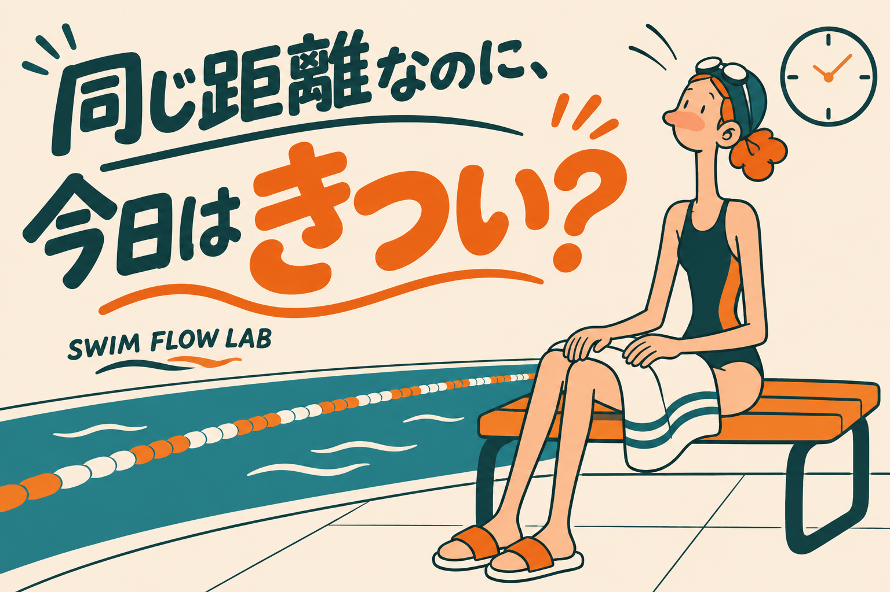

SWIMMING RESEARCH / 28
同じ距離なのに、今日はきつい？
泳いだ長さと、身体が感じたことを分けてみる
2026年11月17日 公開

昨日も今日も、泳いだ距離は同じ。それなのに今日は、最後の壁がずいぶん遠く感じる。「同じだけしか泳いでいないのに」と、自分を責めたくなることはありませんか。
距離は、どれだけ泳いだかを教えてくれます。でも、どんな速さで、どれほどの時間を使い、自分がどのくらいきつく感じたかまでは、一つの数字に入りません。同じ距離でも、同じ練習だったとは限らないのです。今日は、記録の横に「自分の感じ方」を置く方法を考えます。
1 同じ1000mでも、中身は同じ？
たとえば、25mのプールを片道40回泳ぐと1000mです。行きと帰りで2回なので、往復なら20回。この長さは、ゆっくり泳いでも、速く泳いでも変わりません。ここまでは、ものさしで測れる話です。
同じなのは、泳いだ距離
共通：どちらも1000m
1000m。練習全体は30分。
1000m。練習全体は45分。
仮例。同じ1000mでも、A日は30分、B日は45分。時間だけから疲労の差を断定しない。
ところが、その1000mを続けて泳ぐのか、何回かに分けて壁で休むのか。クロールだけなのか、別の泳ぎも入るのか。練習の中身はいろいろです。図のA日とB日は、距離だけを同じにした架空の例です。「B日のほうが悪い練習」という順位はありません。
遠足で同じ道を歩いても、途中で休んだ日と急いだ日では、帰り道の感じ方が違うでしょう。水泳でも、距離の数字だけで一日を全部説明しようとすると、そうした違いが抜け落ちます。
まずは「1000mできた」という事実を残す。その隣に、練習にかかった時間や、途中で休んだことも書く。情報を足すと、同じ数字の下に隠れていた一日の姿が見えてきます。これは記録の整理の提案で、図の時間や距離を練習目標にするものではありません。
2 聞きたいのは「最後の一本」だけではない
「きつかった？」と聞かれたとき、最後のダッシュを思い出す人もいれば、練習が終わった今の疲れを答える人もいます。同じ質問のつもりでも、見ている場所が違うのです。
一回の練習を、最初から最後まで
対象は「いま」ではなく「練習全体」
泳ぎ始めや、ゆっくり泳ぐところ。
速く泳ぐところや、終わりの泳ぎ。
最後の一本だけでなく、練習全体を思い出す。
最後の一本だけでなく練習全体を思い出す。研究では練習終了30分後に評価した。
研究では、一回の練習を丸ごと振り返った、本人の運動のきつさを使う方法があります。「セッションRPE」と呼ばれます。セッションは一回の練習、RPEは本人が感じたきつさの評価です。難しい名前より、最初から最後までを一つのかたまりとして思い出すと考えると分かりやすくなります。
今回読むWallaceらの研究は、0〜10の尺度を使い、練習を終えて30分後に尋ねていました。最後の短い場面だけでなく、全体の評価を得るためです。0は休んでいる状態、10は最大限のきつさに当たります。数字が5だから体力を50％使った、という意味ではありません。原著の方法
小さい子には、いきなり数字を選ばせるより「今日は全体として楽だった？ きつかった？」「どのあたりから？」と話を聞く入口もあります。ただし、この言葉の聞き方と研究の数値尺度は同じ測定ではありません。大人が答えを決めず、子どもの言葉を受け止めることから始めます。
3 きつさと時間を掛けると、何が分かる？
この方法では、練習全体のきつさの数値に、分で表した練習時間を掛けて、一つの記録にします。たとえば、きつさ4で30分なら、4×30＝120。図の数字は計算を読むための仮例です。120mでも、120キロカロリーでもありません。
きつさ × 練習時間 ＝ 記録用の値
計算の練習用の仮例
練習全体のきつさ
練習に使った時間
この方法で計算した値
仮例。きつさ4×30分ときつさ2×60分は、ともに120だが内容は異なる。
では、きつさ2で60分ならどうでしょう。2×60も120です。計算結果は同じでも、短くてきつい練習と、長くて楽な練習の違いは残っています。だから、合計の120だけにせず、もとの「4と30」「2と60」を一緒に残します。
お小遣いの合計が同じでも、何を買ったかまでは分からないのと似ています。この値も、練習の内容や泳法、痛みの有無まで教えてくれる万能の点数ではありません。きつさが2倍なら身体の傷みも2倍、という読み方はできません。
計算を使う場合は、何を練習の開始・終了とするか、いつ聞くか、どの尺度を使うかを指導者とそろえます。日によって「泳いでいる時間だけ」と「休みを含めた練習時間」を混ぜると、数字の違いを読み解きにくくなるからです。最初から掛け算が難しければ、時間と感じ方を別々に記録するだけでも、会話の材料になります。
4 研究では、本人の感じ方も役に立った
ここから紹介する研究は、同じ距離を泳がせて疲れを比べた実験ではありません。日々の練習で、本人のきつさの評価が心拍などの記録とどう関係するかを調べた研究です。
外から見た練習と、本人の感じ方
違いを見つけて、話し合う
どんな内容・強さにする予定だったか。
実際に泳いで、全体をどう感じたか。
指導者の予定した練習と、泳いだ本人が感じたきつさは別の情報。必ず一致するとは限らない。
Wallaceらは、よく訓練された男女12人の泳者を対象に、この記録と、心拍数から計算した指標や泳いだ距離の関係を調べました。平均年齢は約22歳です。本人のきつさを使う値と、心拍を使う値には関連が見られました。
ここで大切なのは、「気のせいだから役に立たない」と切り捨てなくてよい、ということです。一方、関連があることは、二つの測り方が完全に同じという意味ではありません。研究では心拍データに欠けたところがあり、20回分がそろった個人の比較は8人でした。少人数の競技者の結果を、すべての子どもへそのまま当てはめることもできません。研究の方法・結果
また、指導者が見積もったきつさと、泳者が実際に答えたきつさには、練習の強さによってずれがありました。「楽な予定だったから、楽だったはず」と決めつけない理由になります。本人の答えを、先生の正解に近づける必要はありません。
この研究は、数値をつければけがを予測できることや、点数に応じて練習を自動で増減すれば上達することを証明したものではありません。記録は判断の代わりではなく、本人と指導者が同じ一日について話すための材料です。
5 次の練習は、三つだけ残してみる
次回は「泳いだ距離」「練習の時間」「全体をどう感じたか」の三つを、一行に並べてみませんか。研究をそのまま再現する検査ではなく、自分の練習を振り返るための小さなメモです。数字を使うなら、あらかじめ指導者と尺度や聞く時刻をそろえます。
練習の一行メモを、相談につなげる
採点ではなく、自分を知るために
- 1残す
距離・時間・全体のきつさ。
- 2見返す
前回と内容が違うところを探す。
- 3話す
次回は何を続け、何を調整するか相談する。
距離・時間・全体のきつさを同じ日の欄に残し、前回と今回を見返す。
前よりきつかった日は、まず内容を見返します。泳ぐ速さ、休み方、泳法などに違いはあったでしょうか。思い当たることがあれば、それを添えて相談する。理由が分からなければ「分からないけれど、今日はいつもよりきつかった」と伝えれば十分です。
反対に楽に感じた日も、それだけを理由に距離を増やす必要はありません。予定していた動作を確かめられたなら、その内容と感じ方を一緒に残します。今日の一つの値で、来週の練習すべてを決めないようにします。
保護者や指導者は、数字の高さを頑張りの順位にしないでください。「3だったから手を抜いた」「8まで頑張れたから偉い」という採点になると、本人の感じ方を聞く目的から離れます。自分の声を正直に残せることが、このメモの出発点です。
研究から分かったこと
- 研究の目的
- 本人が感じた練習全体のきつさを、水泳の練習記録に使えるかを調べました。
- 何を比べたか
- 競技泳者の、きつさと時間から計算した値を、心拍由来の指標や距離と比べました。
- 何が分かったか
- 指標同士に関連が見られました。一方、本人と指導者の見積もりはいつも一致するわけではありませんでした。
- この記事の答え
- 泳いだ距離だけでは、その日の練習の中身と感じ方を言い表せません。
同じ1000mでも、使った時間や本人が感じたきつさまで同じとは限りません。距離だけの練習帳には書き残せなかった違いが、時間と感じ方を添えることで残ります。計算した値は身体の採点ではなく、後からその日の練習を思い出す手がかりです。